hx docker环境部署¶
概述¶
因为服务器一般都用的linux的服务器，下面以ubuntu16.04的服务器环境为例，说下如何编译生成hx项目的docker部署镜像以及启动相应容器。
下载部署所需资源¶
1.从相应官方网站http://www.hx.cash/下载部署文件deploy_data.zip并解压到本地的路径。目录结构如下：
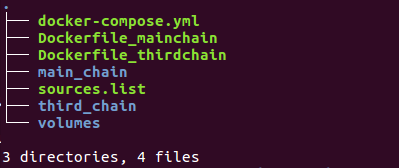
2.目录结构说明：
- main_chain目录：该目录放的是hx主链所需的内容以及启动脚本；
- third_chain目录：该目录放的是hx接入的第三方链的内容以及启动脚本；
- volumes目录：该目录主要用于将启动后hx中的相关链数据以及log映射到外面；
- docker-compose.yml文件：用于组织和配置hx中两个docker serveice hx-mainchain以及hx- thirdchain的；
- Dockerfile_mainchain和Dockerfile_thirdchain文件：定义hx_mainchain以及hx_thirdchain的docker文件；
- sources.list文件：Ubuntu系统中的配置文件，用于配置ubuntu源。
配置文件详细说明¶
1.Dockerfile_mainchain
(1)对于国内用户，docker中将sources.list做了修改，以便更好、够快的安装相关软件；
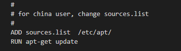
(2)配置hx_mainchain所需内容；
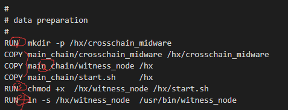
-
在docker镜像中创建/hx/crosschain_midware目录，用于存放中间件相关的数据；
-
将hx_mainchain所需的内容从main_chain目录拷贝到docker镜像中；
-
将start.sh（docker启动后执行的脚本）以及witness_node（mainchain的节点）赋予执行权限；
-
将witness_node链接到/usr/bin下，方便start.sh脚本进行使用
(2)配置hx_mainchain启动执行脚本
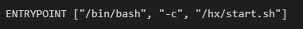
(3)hx_mainchain的执行脚本，位于main_chain目录下
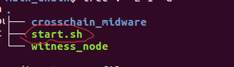
2.Dockerfile_thirdchain
它的结构类似上述的Dockerfile_mainchain，这里不再赘述；
3.Docker-compose.yml
(1)docker-compose 中定义了两个service（镜像），分别为hx_thirdchain以及hx_mainchain；
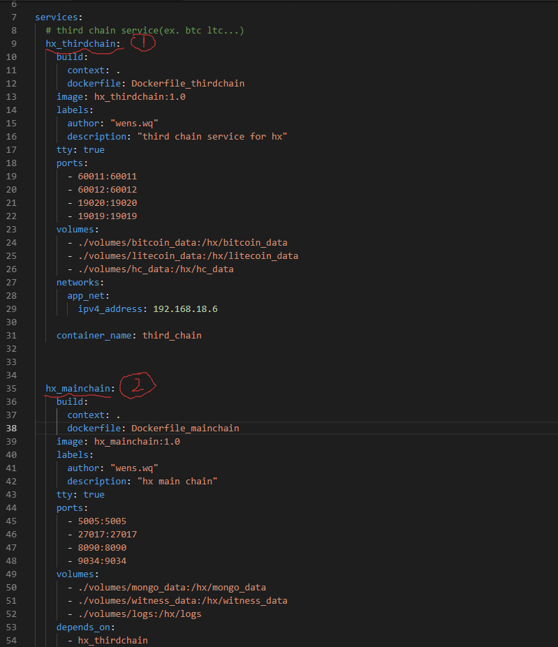
(2)Service：hx_thirdchain
- 以当前目录下的Dockerfile_thirdchain作为其docker file；
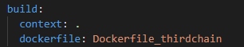
- 定义service(镜像)的name以及tag
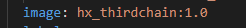
- 设定thirdchain的端口映射这些端口对应于执行脚本中相关链的端口
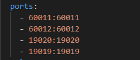
执行脚本start.sh中的端口情况
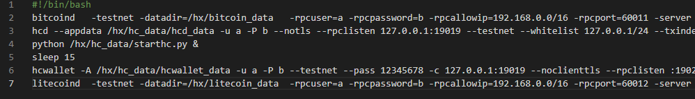
- 设定映射的目录
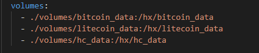
- 设定service启动后运行docker的名称
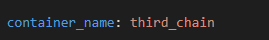
- 设定service的ipv4地址
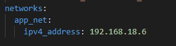
(3)Service：hx_mainchain
类似上面的hx_thirdchain service
- 设定该service的依赖项,hx_mainchain service依赖于hx_thirdchain service
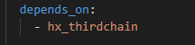
- 设定该service的ipv4地址
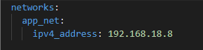
4.执行脚本(start.sh)
(1)main_chain中的执行脚本
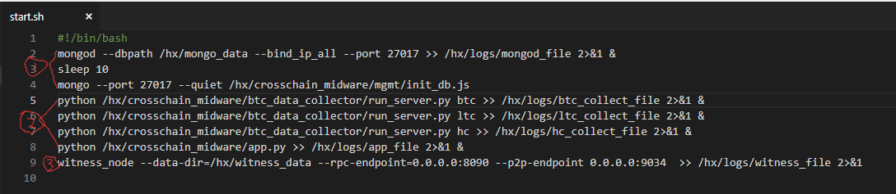
- 启动采集插件所需的mongo db
- 启动采集插件
- 启动mainchain的witness_node节点
(2)third_chain中的执行脚本
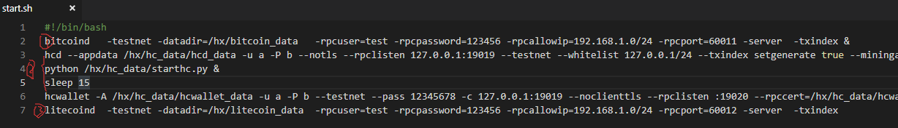
- 启动bitcoin节点
- 启动hc节点
- 启动litecoin节点
编译镜像¶
进入到deploy_data目录，执行下面的命令：
sudo docker-compose build [hx_mainchain/hx_thirdchain]
说明： [hx_mainchain/hx_thirdchain]为可选参数，表示编译哪个镜像(service)，若为空，则编译所有的镜像(service)。 docker compose中有两个镜像(service), 分别为hx_mainchain, hx_thirdchain, 其中hx_mainchain依赖于hx_thirdchain. 所以你也可以编译单独的镜像。
启动容器¶
在deploy_data目录下执行下面的命令：
sudo docker-compose up –d [hx_mainchain/hx_thirdchain]
说明： [hx_mainchain/hx_thirdchain]为可选参数，表示以哪个镜像为基础启动container，若为空，则启动所有container。 因为hx_mainchain依赖于hx_thirdchain, 所以先要启动hx_thirdchain让里面的第三方链同步数据；过一段时间后(最好是数据同步好后)，启动hx_mainchain，里面的采集程序采集相关数据。
确认容器状态¶
在deploy_data目录下使用cli_wallet(如果其没有执行权限，加上相应执行权限)，连接上hx链查看其状态。
./cli_wallet -s ws://192.168.18.8:8090
说明：上面命令的的ip以及port的说明具体见上面配置文件的说明。